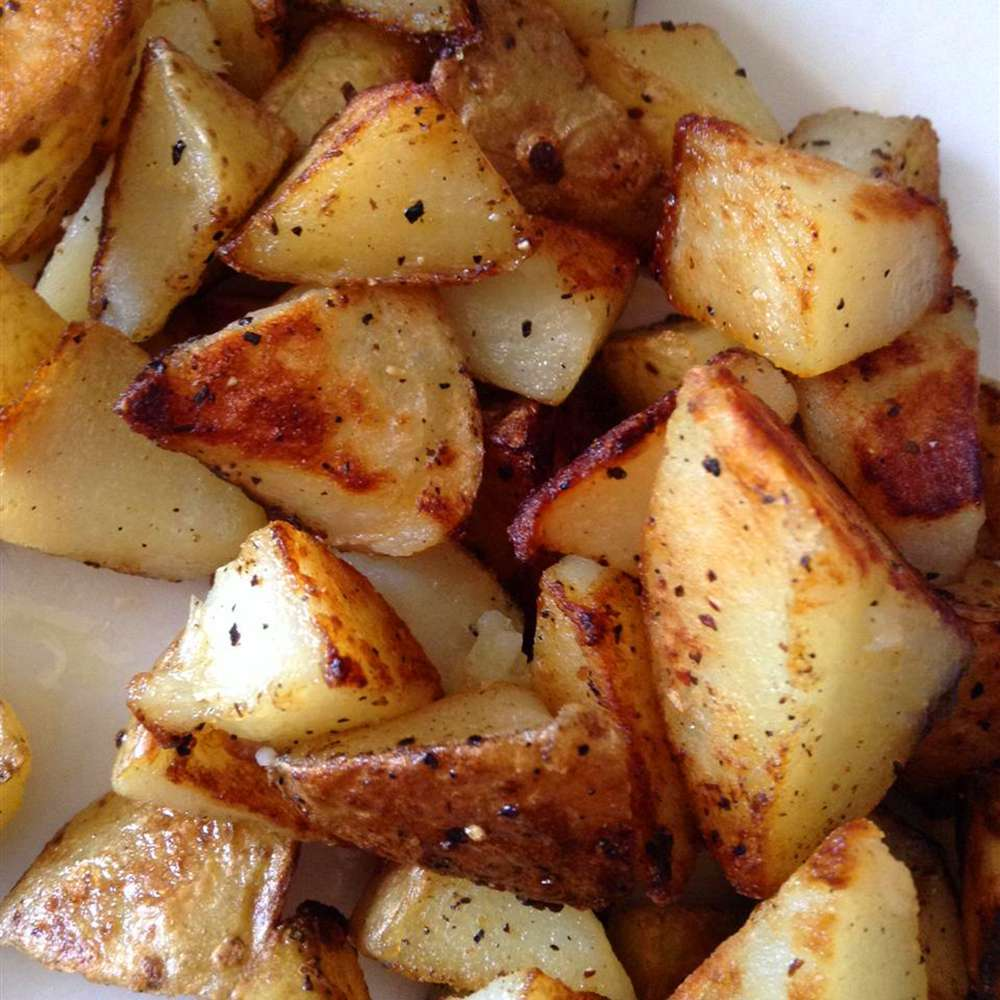

Quick and Easy Home Fries

Description
These home fries turn out crispy every time. They're great for breakfast or as a side dish.
If you prefer crispy hash browns, use shredded potatoes (instead of cubed) and follow the recipe directions.
Ingredients
- 3 medium russet potatoes, cubed
- 3 tablespoons butter or margarine
- salt and ground black pepper to taste
Directions
- Cut potatoes into cubes.
- Rinse potato cubes with cold water and drain well.
- Melt butter in a large skillet over medium heat. Place potatoes in the skillet and season with salt and pepper; mix well. Cover and cook for 10 minutes.
- Remove the lid and cook, turning frequently, until brown and crisp on all sides, about 10 more minutes.
- Serve hot and enjoy!